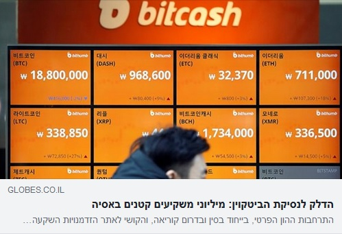

פורסם בתאריך 29.12.2017
התכנים בפוסט זה, כמו כל שאר התכנים בבלוג, הינם תכנים לימודיים במהותם, הם אינם מהווים ייעוץ או המלצה לביצוע פעולה בנייר ערך, ואין לראות בהם תחליף לייעוץ השקעות ו/או ייעוץ פנסיוני המתחשב בצרכיו הייחודיים של כל אדם.
בעבר המטבעות בעולם היו צמודים לנכס פיסי כלשהו - בעיקר זהב. כך ממשלות לא יכלו להדפיס יותר כסף מכמות הזהב שברשותן. העניין השתנה בשנת 1971, לאחר ביטול הסכם ברטון וודס, ומאז הכסף בעולם מכונה כסף "פיאט", שאינו מגובה בשום נכס וניתן להדפסה חופשית.
מכאן לכאורה, אין שום ערך "אמיתי" לכסף פיאט, הבנקים המרכזיים יכולים לבחור להדפיס כמויות עצומות ממנו ולגרום לאינפלציה אימתנית (מה שאכן קרה בעבר אפילו בארה"ב, וקורה גם בימינו במדינות פחות מפותחות ושכלכלתן פחות חופשית). אם כך - מה ההבדל בין הביטקוין, שגם ערכו אינו מגובה בשום נכס פיסי למטבעות הפיאט - דולר, יורו, ליש"ט, שקל? אדרבא, לביטקוין יש על פניו יתרונות על פני מטבעות ממשלתיים - בגלל שאינו בשליטה של שום גורם ממשלתי, אף אחד לא יכול להנפיק ממנו ללא הגבלה, ותהליך הכרייה שלו מבטיח שקצב הגידול בכמות המטבעות הוירטואליים יילך ויפחת, ופחות או יותר יתקבע בעתיד.
בשביל לבחון את ההבדל בין ביטקוין למטבעות ממשלתיים, נבחן תחילה מה קובע את הערך של מטבע "פיאט" ממשלתי. ערכו הכלכלי של כסף ממשלתי נובע מכך שאפשר לשלם באמצעותו במדינה המנפיקה אותו, להפקידו בבנקים, ולהשתמש בו לרכישת נכסים באותה מדינה. מדינות שצומחות כלכלית מושכות אליהן השקעות והון, ומטבעותיהן עולים בערכם. במדינות במשבר קורה התהליך ההפוך וערך מטבעותיהן יורד. זו הסיבה למשל לירידה בערכו של הליש"ט לאחר הברקזיט - המשקיעים העריכו שהניתוק מאירופה יגרום לירידה בתוצר בבריטניה והעדיפו להסיט השקעות לאזורים אחרים. ערכם של מטבעות אינו מבוסס רק על אמונה בערך המטבע ועל כוחות היצע וביקוש, אלא על ערך כלכלי אמיתי שמפיקה המדינה המנפיקה ועל ביצועיה הכלכליים בהשוואה למדינות אחרות. אמנם שערי המטבעות מאוד תנודתיים וקשה עד בלתי אפשרי להגדיר מהו התמחור ה"נכון" לשער חליפין כלשהו, אך לאורך זמן שווי המטבע מתכנס לערכו הכלכלי ה"נכון", המבוסס על ביצועיה הכלכליים של המדינה והיקף הכסף שהיא מדפיסה.
אז אם לא ניתן לקבוע מהו השווי ה"נכון" של מטבע בנקודת זמן מסויימת, אבל לאורך זמן, שער החליפין מתכנס לאותו שווי "נכון" חמקמק, האם יש כאן סתירה?
כן ולא. ניתן ליישב זאת ע"י הערכת שווי ממוצעת לאורך זמן. כלומר, בפרקי זמן קצרים לא קיים לקובע במדוייק שווי "נכון", אבל לטווח ארוך השווי הממוצע משקף את השווי "הנכון" בצורה מדוייקת יחסית. אותו הדבר קורה אגב גם בהערכת שווי מניות - אמנם קיימים מודלים רבים לתמחור מניות, אך אף אחד מהם אינו נוסחא פיסיקלית מדוייקת, וכולם תלויים בהערכות רבות. שני אנליסטים המשתמשים באותו מודל תמחור בדיוק, ומסתמכים על אותם נתונים, יכולים להגיע לתמחור שונה מאוד עבור אותה מניה. גם מניות יכולות להיות מאוד תנודתיות ולשקף הערכות אופטימיות/פסימיות יתר על המידה בנוגע למצב החברה, אך תיקונים (לעיתים חדים) מתרחשים בסופו של דבר והשווי הממוצע לטווח ארוך הוא המייצג הנכון יותר לשווי האמיתי של החברה (ושל המניה).
הביטקוין, לעומת מטבע ממשלתי, אינו נשען על בסיס כלכלי. עליית ערכו יצרה עושר מדומה של יותר מ-100 מיליארד דולר יש מאין. ערכו מבוסס אך ורק על אמונה של המשקיעים בערכו ומחירו נקבע בהתאם לכוחות היצע וביקוש בלבד. זוהי הסיבה לתנודתיות העצומה של עשרות אחוזים בימים בודדים במחירו, ולעלייה של כ-1600% תוך מס' חודשים, שאין לה מקבילה בשוקי המטבעות. העלייה המטאורית והבלתי מוסברת בערך הביטקוין בתקופה האחרונה בעלת מאפיינים דומים לבועת הצבעונים בהולנד במאה ה-17, במהלכה עלה ערכו של פרח הצבעוני בצורה מטאורית, עד שפרח בודד גילם שווי של אחוזה מפוארת באותם ימים. המחיר עלה ועלה אך ורק בגלל ספוקלציות של ההמון שהביקוש תמיד יהיה גבוה ויתמוך בהמשך עליית המחירים, וכאשר הגיע לנקודה בה כבר לא היו קונים שמוכנים לשלם את מחירו, הבועה התפוצצה והמחיר צנח במהירות לרמתו המקורית. גם הנתונים שפורסמו לאחרונה על כך שכ-80% מנפח המסחר בביטקוין מקורו במשקיעים פרטיים מהמזרח הרחוק מרמזים על קיום בועה. ביפן כבר התפתחה בשנות ה-80 בועה מטורפת בשווקי המניות והנדל"ן, ובסין ודר' קוריאה נוצרה בזמן האחרון שכבה גדולה של מעמד ביניים, בעל כספים פנויים להשקעה אך ללא ניסיון בהשקעות, שכנראה נשאב לאשליות ונסחף אחר טרנדים "מגניבים" כמו הביטקוין, מבלי להבינם לעומק. נגיד הבנק המרכזי האמריקאי לשעבר, אלן גרינספן, מנכ"לים של בנקים גדולים בארה"ב, ויו"ר הרשות לני"ע בישראל פרופ' שמואל האוזר, הזהירו מהשקעה בביטקוין.

אלו המלמדים סנגוריה על ערכו של הביטקוין בכך שישנם בתי עסק המוכנים לקבל תשלום בביטקוין חוטאים לאמת - בתי העסק (המעטים) הללו ממירים מיד תשלומים המתקבלים בביטקוין למטבעות ממשלתיים, כי אחרת יהי חשופים לתנודות הקיצוניות בערכו. גם אלו המקבילים בין ערך הביטקוין לזהב, בין היתר כי את שניהם צריך "לכרות" והכמות שלהם מוגבלת, מתעלמים מהעובדה שלזהב הפיסי יש ערך בעולם האמיתי, ואילו הביטקוין הוא וירטואלי לחלוטין.
נקודה אחרונה נוגעת לבלוקצ'יין שהיא טכנולוגיה מצויינת, שבהחלט יכולה לשמש את התעשייה הפיננסית (ולא רק) בשנים הקרובות. לא סתם בנקים וחברות אשראי גדולות משקיעות המון בפיתוחים הקשורים לבלוקצ'יין. אבל אין לבלבל בין ערך הטכנולוגיה לערך המטבע הוירטואלי שעושה בה שימוש. הם שונים בתכלית.
למרות זאת, נראה שבכל זאת יש בהם משהו מהמשותף: טירוף הביטקוין גורר אחריו גם את טכנולוגיית הבלוקצ'יין לבועה. חברת תה קר מלונג איילנד הוסיפה blockchain לשמה וטסה 289% ביום. החברה אפילו לא פיתחה שום דבר בתחום, אלא רק הודיעה שהיא בוחנת השקעות ושיתופי פעולה עם חברות אחרות בתחום. מסתבר שזה הספיק לזינוק המטאורי הזה, ולא מדובר בדוגמא היחידה ל-rebranding שהניב תוצאות דומות.
אז האם להשקיע או לא להשקיע בביטקוין? אני לא משקיע במה שאני לא מבין, במיוחד במשהו שערכו האמיתי, אם בכלל קיים, אינו ברור. מי שרוצה להמר - בבקשה. אבל יש הבדל עצום בין השקעה לבין הימור.
רוצה לשאול שאלות ולהשתתף בדיון? את/ה מוזמן/ת לפוסט בעמוד הפייסבוק שלנו.
רוצה לקבל סוף כל סוף את כל הכלים והידע הפרקטי כדי להשקיע בקלות וביעילות את כספיך וחסכונותיך? לחץ/י כאן כדי לראות את שירותי ההדרכה והסיוע במימוש השקעות פאסיביות שאנחנו מציעים.